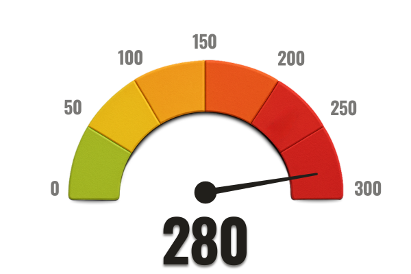

Aviso de Privacidad: Las respuestas de este cuestionario son 100% anónimas y confidenciales.
Aviso de Privacidad: Las respuestas de este cuestionario son 100% anónimas y confidenciales.
Puede que pienses que solo te pasa a ti… Pero la verdad es que millones de personas sufren con ese sonido invisible. El zumbido afecta silenciosamente la vida social, el sueño y hasta la salud mental.
No estás solo — y lo más importante: esto tiene solución.
Aviso de Privacidad: Las respuestas de este cuestionario son 100% anónimas y confidenciales.
Aviso de Privacidad: Las respuestas de este cuestionario son 100% anónimas y confidenciales.
Durante mucho tiempo, se creyó que el tinnitus era solo una consecuencia natural del envejecimiento.
Pero estudios recientes muestran que podría estar relacionado con el uso prolongado de ciertos medicamentos comunes.
La ciencia ya identifica a un villano silencioso.
Aviso de Privacidad: Las respuestas de este cuestionario son 100 % anónimas y confidenciales.
Aviso de Privacidad: Las respuestas de este cuestionario son 100% anónimas y confidenciales.
Aviso de Privacidad: Las respuestas de este cuestionario son 100% anónimas y confidenciales.
Aviso de Privacidad: Las respuestas de este cuestionario son 100% anónimas y confidenciales.
Pocas personas lo saben, pero muchos medicamentos comunes —como antibióticos, aspirinas y antialérgicos— contienen sustancias ototóxicas.
Estas toxinas actúan de forma silenciosa y progresiva: se acumulan en el oído interno, inflaman los tejidos y endurecen el tímpano, lo que impide una correcta captación de los sonidos.
Con el tiempo, el cuerpo deja de percibir frecuencias sutiles, y el cerebro intenta compensar... creando ruidos internos como zumbidos y pitidos.
"Pensé que me estaba volviendo loco... pero descubrí que el problema estaba dentro de mi cuerpo: las toxinas." — Carlos F., 58 años
Aviso de Privacidad: Las respuestas de este cuestionario son 100% anónimas y confidenciales.
Aviso de Privacidad: Las respuestas de este cuestionario son 100 % anónimas y confidenciales.
Aviso de Privacidad: Las respuestas de este cuestionario son 100 % anónimas y confidenciales.
Aviso de Privacidad: Las respuestas de este cuestionario son 100 % anónimas y confidenciales.
Aviso de Privacidad: Las respuestas de este cuestionario son 100 % anónimas y confidenciales.
Aviso de Privacidad: Las respuestas de este cuestionario son 100 % anónimas y confidenciales.
Aviso de Privacidad: Las respuestas de este cuestionario son 100 % anónimas y confidenciales.
Detrás de muchos casos de zumbido y pérdida auditiva, hay un enemigo silencioso: toxinas acumuladas en el oído interno.
Estas sustancias, presentes en medicamentos comunes, inflaman los tejidos y dañan lentamente el tímpano.
La medicina convencional a menudo ignora esta causa. Pero las ciencias naturales han empezado a ver lo que se esconde detrás de este mal invisible.
"Y es entonces cuando un descubrimiento natural empieza a cambiarlo todo..."
Investigadores de la salud natural, con el apoyo de instituciones como Harvard, Stanford y el Instituto Johns Hopkins de Estados Unidos, han hecho un descubrimiento sorprendente:
Una planta milenaria llamada moringa ha demostrado un fuerte potencial para neutralizar las toxinas ototóxicas que se acumulan silenciosamente en el oído humano.
Estudios recientes demuestran que sus compuestos activos actúan directamente sobre las inflamaciones microscópicas del sistema auditivo, restaurando la flexibilidad del tímpano y protegiendo al cerebro de los daños causados por una sobrecarga de estímulos sonoros.
"Ésta podría ser la clave natural para romper el ciclo de intoxicación auditiva y recuperar la audición."
Aviso de Privacidad: Las respuestas de este cuestionario son 100 % anónimas y confidenciales.
La moringa actúa como un antioxidante y antiinflamatorio natural muy potente. En el sistema auditivo:
Basado en estos descubrimientos, desarrollamos el Protocolo Vitamax:
Solo necesitas 2 minutos al día para comenzar tu transformación.
Aviso de Privacidad: Las respuestas de este cuestionario son 100 % anónimas y confidenciales.
Después de analizar tus respuestas, identificamos un nivel crítico de intoxicación ototóxica en tu sistema auditivo.
⚠️ Nivel aceptable de toxinas auditivas: hasta 80 puntos
❌ Tu nivel actual: 280 puntos
Esto representa más de 3 veces el límite seguro para el oído humano. No se trata solo de estadísticas, sino de un daño real que ya está comprometiendo tu audición.
Tu exposición a medicamentos con sustancias ototóxicas es muy alta. Estas toxinas inflaman el oído interno y endurecen el tímpano, reduciendo drásticamente tu capacidad para captar sonidos con claridad.
Reportaste síntomas como pitidos, silbidos y pérdida auditiva progresiva. Esto indica que tu tímpano ha perdido parte de su elasticidad natural, lo que provoca sonidos distorsionados o apagados.
El estrés provocado por el ruido constante pone a tu cerebro en alerta permanente. Esto puede explicar insomnio, ansiedad, irritabilidad, pérdida de memoria y dificultad para concentrarte.
Tu sistema inmunológico auditivo está debilitado. En lugar de combatir las toxinas, agrava la inflamación, acelerando la pérdida auditiva y el zumbido constante que experimentas.
Su oído sufre a diario ataques invisibles pero extremadamente agresivos. El diagnóstico apunta a una intoxicación avanzada, una inflamación crónica y un riesgo real de pérdida de audición permanente.
El zumbido que siente es sólo la punta del iceberg, señal de que el daño interno se encuentra en una fase avanzada.
Si no se toman medidas ahora, el riesgo de pérdida de audición permanente, confusión mental y empeoramiento de los síntomas es cada vez mayor.
Pero la buena noticia es que aún estás a tiempo de revertirlo, y eso empieza con el siguiente paso.
RECUPERA TU